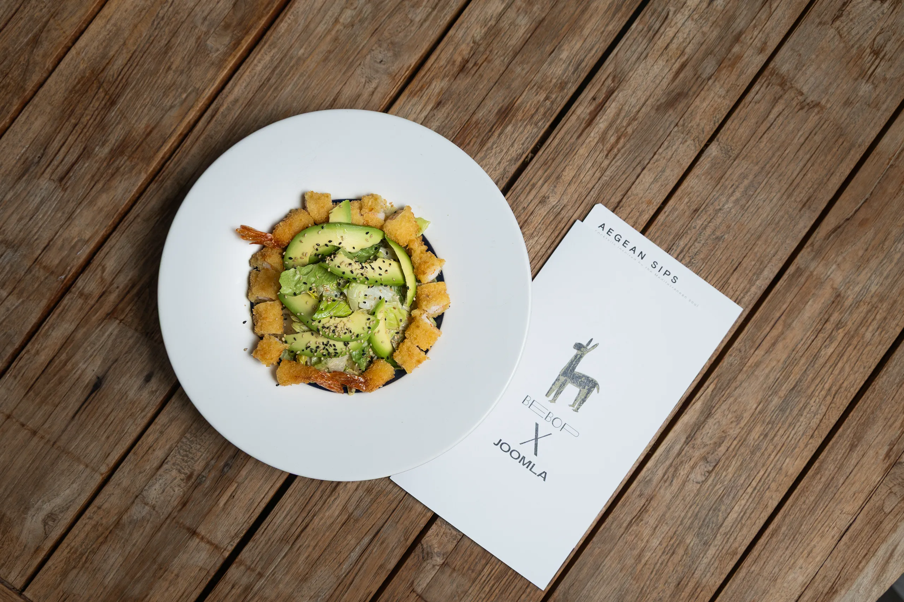
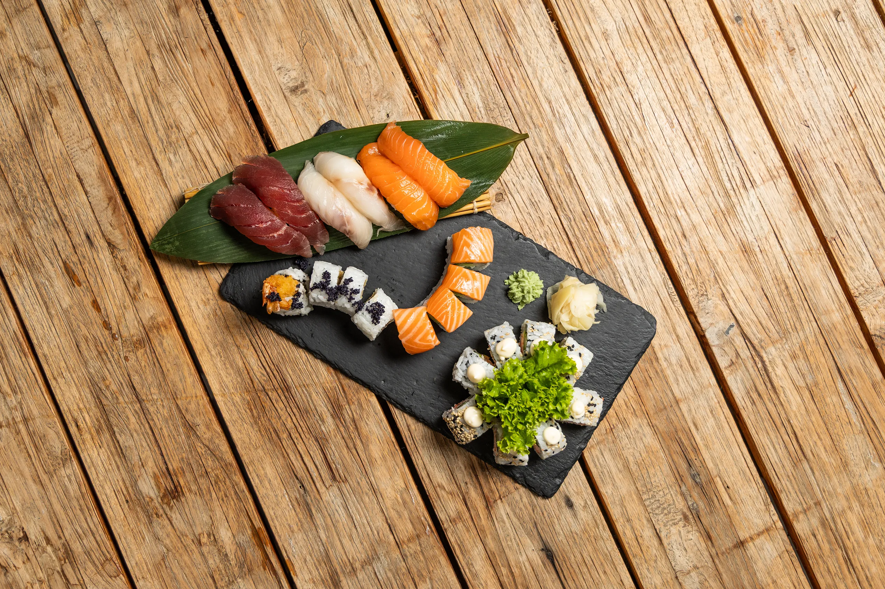
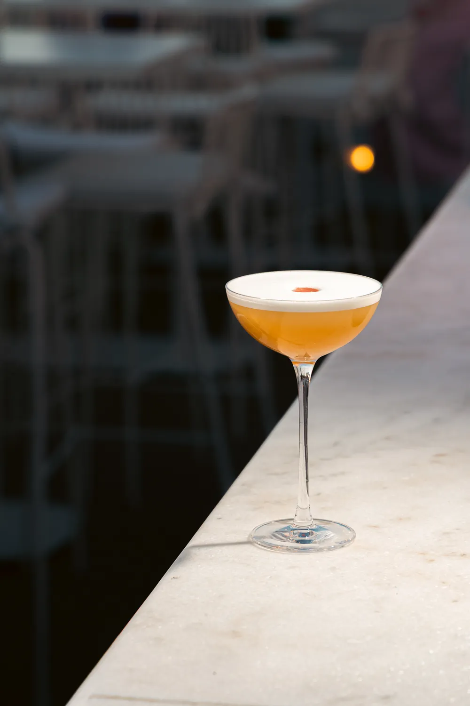
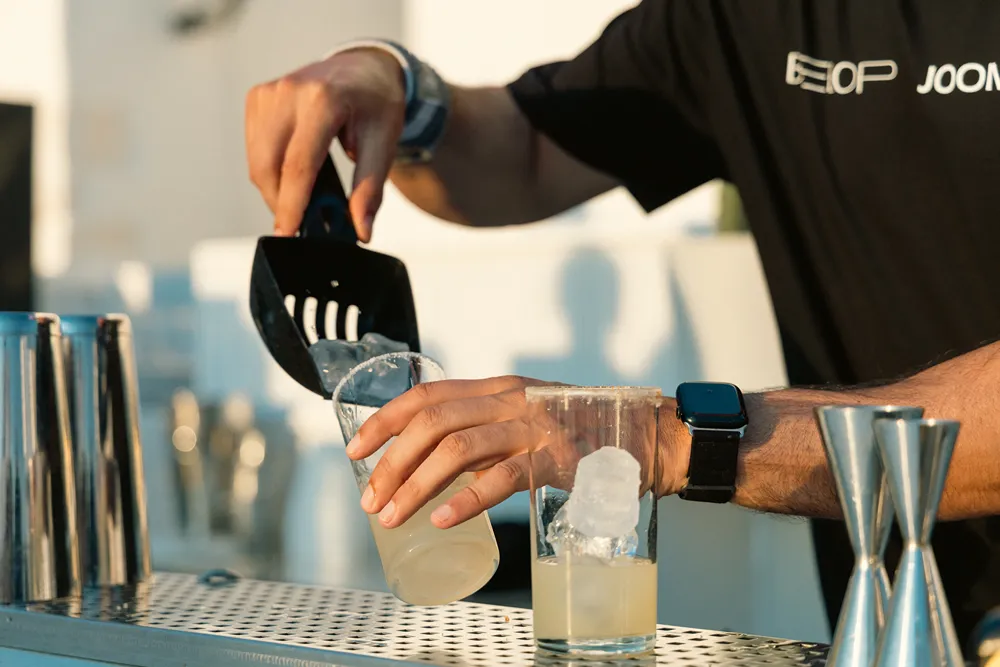

The Ingredients
A Kitchen where two oceans meet
01 - The Kitchen
Japanese Style, quietly composed.
At Bebop x Joomla, we take pride in sourcing the freshest and highest quality ingredients for our dishes. Our commitment to excellence ensures that every bite is a delightful experience.



02 - The Bar
A Symphony of Flavors
Our cocktail menu is crafted with precision and creativity, offering a diverse selection of drinks that complement our culinary offerings. From classic favorites to innovative creations, our cocktails are designed to enhance your dining experience.

The full card
Every plate, every pour — in one menu.
Browse the complete Sushi kitchen and the signature cocktail list before you arrive.